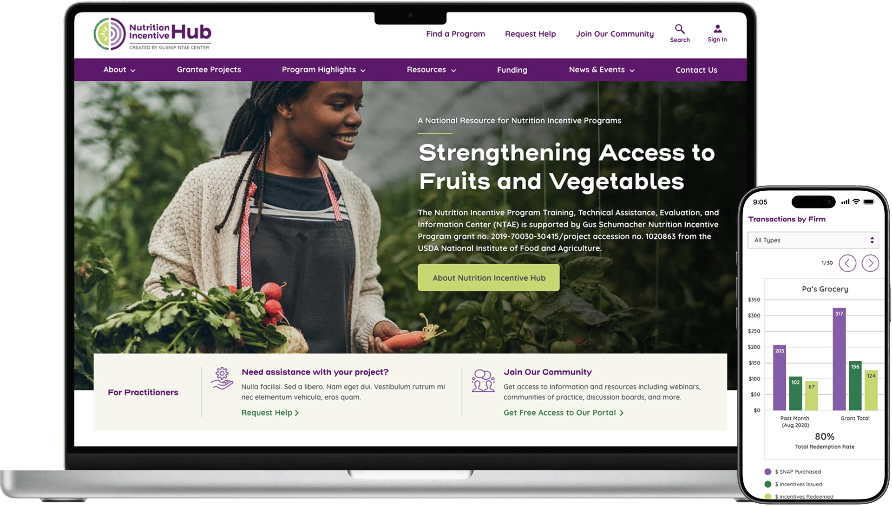
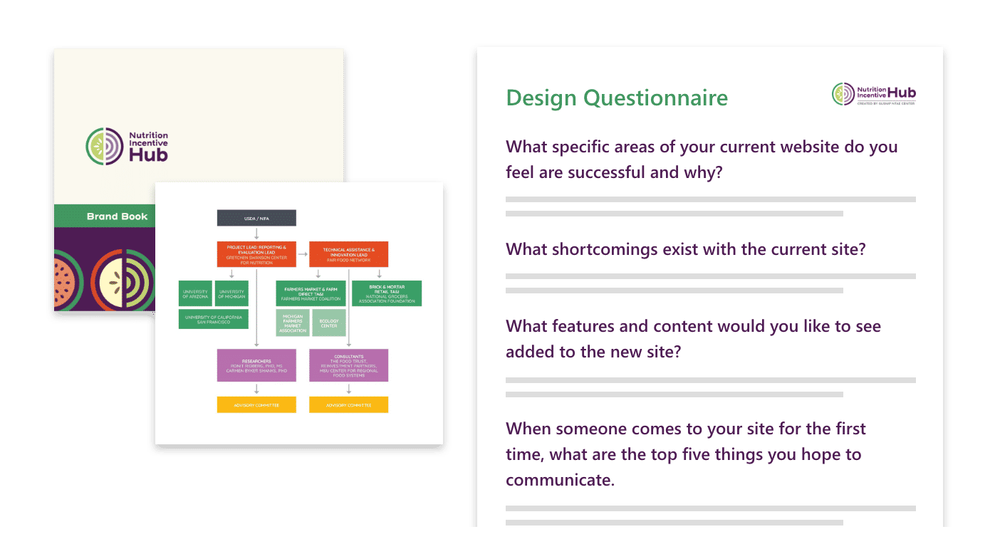
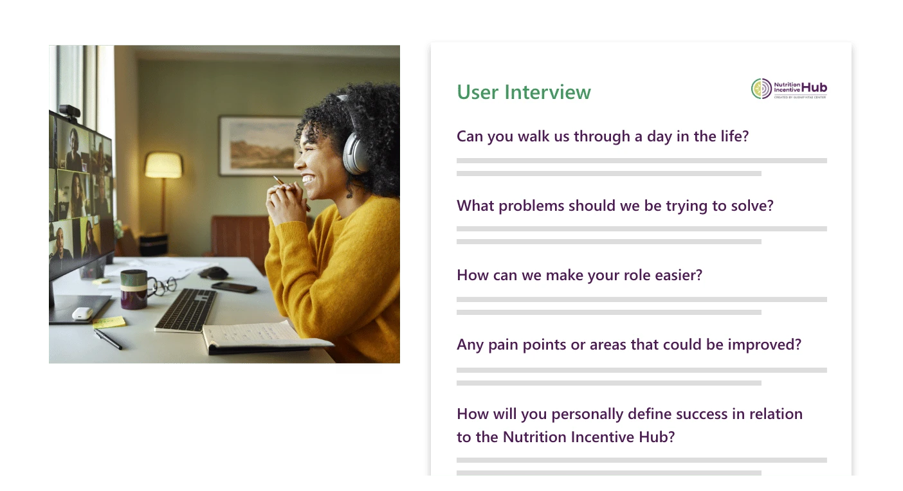
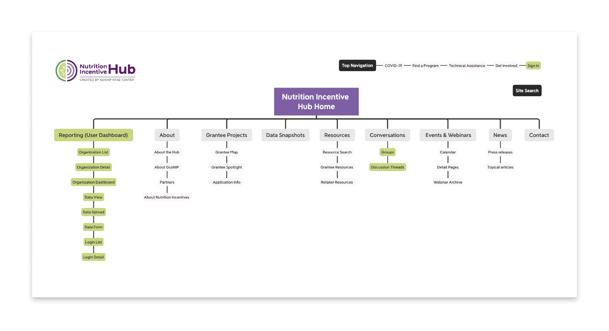
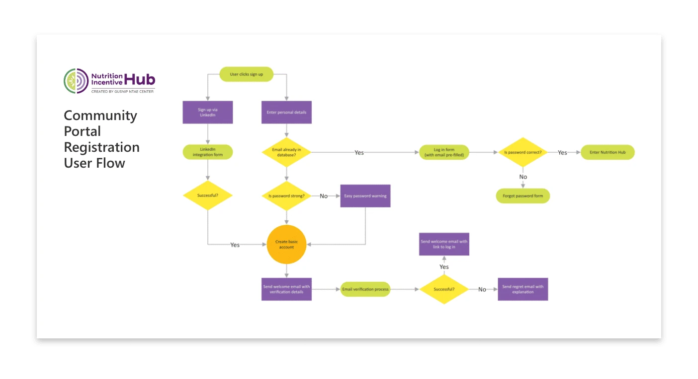
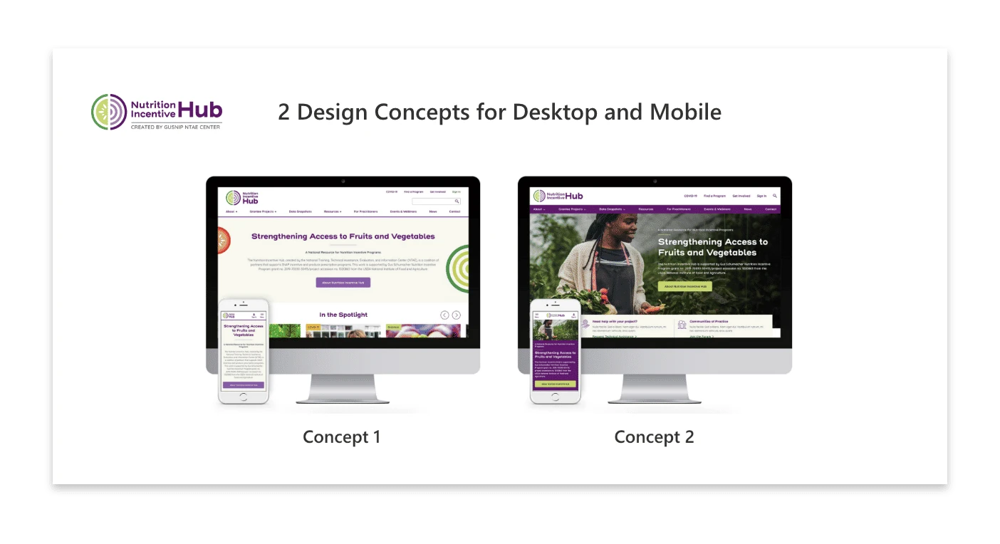
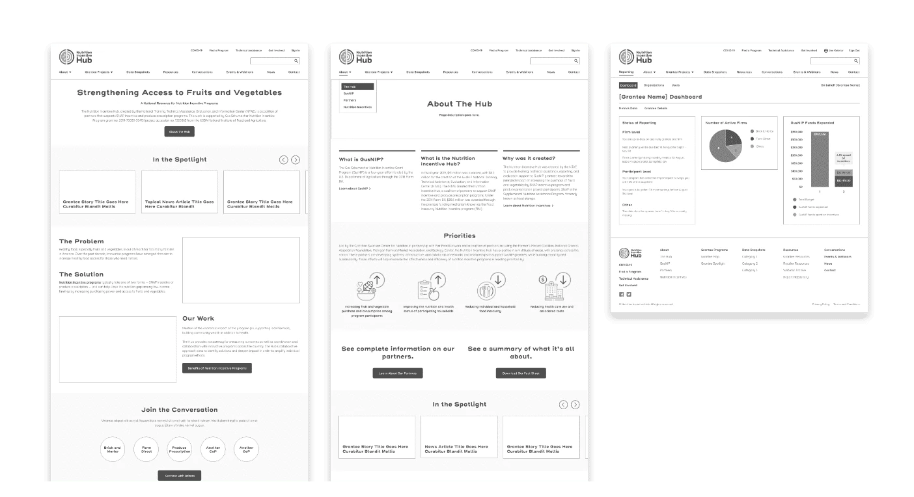

Case study · 5 min read
Grant tools unified into a platform people trust
Spreadsheets replaced by a portal, and a 45-to-55-hour process down to just over ten.
- Client
- Gretchen Swanson Center for Nutrition, for the USDA-backed Nutrition Incentive Hub
- My role
- Lead product designer
- Timeline
- 8 months
- What changed
- One public website, portal, and reporting platform replacing spreadsheets and legacy tools

Overview
Nutrition Incentive Hub
A USDA-backed coalition supporting nutrition incentive and produce prescription projects, which put healthy food on the tables of families who need it most.
The problem
The network ran on old software, spreadsheets, and workarounds, and no two of them agreed. Grantees spent more time chasing paperwork than running programs, and administrators couldn’t tell which programs were working.
The solution
I led the design of one platform to replace all of it: a public website of resources and information, a portal where grantees report, and the Power BI reports administrators read. Grantees and administrators could finally trust what they found.
My part
I led the research, information architecture, visual design, and design system, and checked each pattern against WCAG 2.1 AA. Developers built the website, the portal, and the Power BI reports, and the center’s staff decided what came first.
My approach
Who touches a grant, and what changed for each
Getting fundedReporting back

Apply
- Who is in it
- Grantees, applying to run nutrition incentive and produce prescription projects.
- Before
- Old software, spreadsheets, and workarounds. People got lost partway through applying.
- After
- One portal. Resources named the way people say them, each within two clicks, and help where people got confused.

Review and fund
- Who is in it
- Reviewers at the center, deciding which applications go forward.
- Before
- Illustrative: What a grantee sent and what a reviewer saw lived in tools that did not agree.
- After
- What grantees submit connected to what reviewers see, with the decision paths mapped so no one hits a dead end.

Report
- Who is in it
- Grantees, every reporting period, and the analysts who check what they send.
- Before
- Submissions checked and validated by hand, after they arrived.
- After
- Validation moved into the forms. Checking time roughly halved, and the analysts saw fewer submission errors.

Analyze and decide
- Who is in it
- Analysts answering data requests, and administrators deciding which programs are working.
- Before
- 45 to 55 hours per data-analysis request. Administrators could not tell which programs were working.
- After
- Just over 10 hours per request, and nearly twice the grantees with no new analysts.
What the map shows
The work was connecting the stages
At every stage, someone waited on a system that couldn’t see what the last person did. One record now carries each grant through all four.
Stages 01 to 04
Data requests take just over 10 hours, down from 45 to 55
Analysts answer them from Power BI reports on the platform’s own data.
Stage 04
The reporting rules moved into the forms
Tesler’s Law says complexity can’t be removed, only moved. The forms took on the federal rules analysts used to check by hand, and checking time roughly halved.
Stage 03
Research
We paired a system audit with interviews and journey maps. The data showed what was slow, the interviews showed what was stressful, and they rarely pointed at the same thing.
System audit & analysis

What we discovered
- Found where the spreadsheets slowed everyone down
- Matched federal reporting rules to what the system could do
- Documented every tool in use, to replace the paper trail
Stakeholder inquiry

The human truth
- Interviewed users to find what wore them down
- Made the case for one live portal
- Found where people got lost while applying
Persona development

Building empathy
- Built personas for every kind of user
- Named the groups having the hardest time
- Gave developers real people to build for
Journey mapping

Mapping pain points
- Mapped the trip from applying to getting funded
- Marked the moments people got confused
- Added help where people needed it most
Information architecture
We organized the content around how people look for things, so a first-time grantee could find what they needed without knowing where it lived.
Strategic content org

Making complexity simple
- Renamed things the way people actually say them
- Put every resource within two clicks
- Built room for the network to keep growing
Workflow optimization

Removing friction
- Reduced processing time from 45–55 hours to just over 10
- Mapped the decision paths so no one hit a dead end
- Connected what grantees submit to what reviewers see
Visual design
Public-sector tools often feel cold. We aimed for the authority a federal program needs and the warmth its community deserves.
Conceptual exploration

Finding the right balance
- Balanced federal authority with a human feel
- Tried directions that met the rules and still felt usable
Prototyping & validation

De-risking the design
- Tested assumptions on rough screens first
- Applied WCAG standards from the first draft
- Filled out the forms ourselves to find the errors
The impact
How I measured this
How each figure above was counted, over what period, and what it cannot tell you.
- 45–55 hours to just over 10
- The analysts’ logged time per data-analysis request: the range across a sample of requests before the platform, against the average once requests ran through the Power BI reports. Measured by the program team from their own time records.
- Validation time, roughly half
- Time spent checking and validating grantee submissions per reporting period, before and after validation moved into the forms. The drop in submission errors is what the analysts observed. The error rate was not tracked the same way before, so it has no percentage.
- Grantees nearly doubled, no new analysts
- The grantee count at launch against the count after the platform had run a full reporting cycle. Analyst headcount over the same period did not change.
- 135+ grantees, 200,000+ page requests a week
- Read from the platform’s own analytics and database: counts, not estimates.